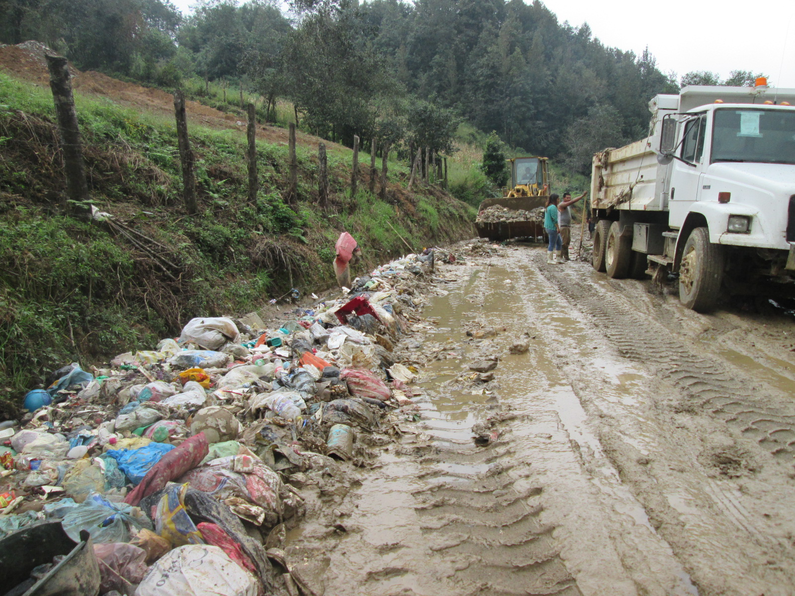
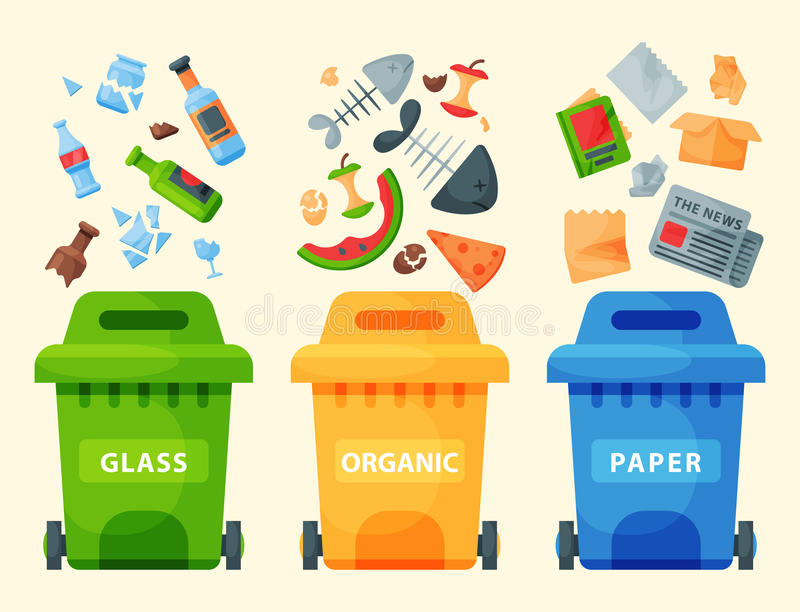
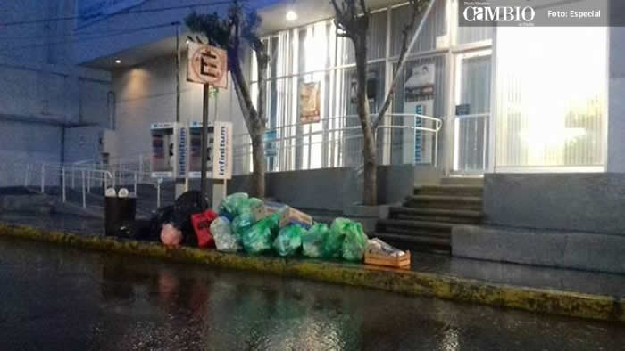

TIPOS DE CONTAMINACÓN
- Contaminación Acústica
- Contaminación Atmosférica
- Contaminación Electromagnética
- Contaminación Hídrica
- Contaminación Lumínica
- Contaminación Radiactiva
- Contaminación del Suelo y Subsuelo
- Contaminación Térmica
La contaminación es la introducción de un agente contaminante, que puede ser líquido, sólido o gaseoso, y que por sus características químicas, cuando se adentra en un medio natural, causa su inestabilidad y daña el funcionamiento del ecosistema. De esta manera se afecta conllevando riesgos para los seres vivos que residen en él.
Los tipos de contaminantes, como vimos, pueden variar, y a la vez dependen de la energía, sonido, calor o luz...
- Contaminación Acústica
- Contaminación Atmosférica
- Contaminación Electromagnética
- Contaminación Hídrica
- Contaminación Lumínica
- Contaminación Radiactiva
- Contaminación del Suelo y Subsuelo
- Contaminación Térmica
- Problemas para la salud
- Debilitamiento de la capa de ozono
- Afectamiento al suelo y al agua
- Afectamiento al clima
El reciclaje consiste en obtener una nueva materia prima o producto, mediante un proceso fisicoquímico o mecánico, a partir de productos y materiales ya en desusoo utilizados. De esta forma, conseguimos alargar el ciclo de vida de un producto, ahorrando materiales y beneficiando al medio ambiente al generar menos residuos. El reciclaje surge no sólo para eliminar residuos, sino para hacer frente al agotamiento de los recursos naturales del planeta
Todo este proceso de reciclaje, pasa por varias fases:
El reciclaje comienza en entornos industriales y domésticos, mediante la separación de los materiales. El siguiente paso consiste en la recuperación de estos materiales por las empresas públicas y privadas y su posterior traslado a las plantas de transferencia.
En estas plantas, se almacenan y compactan grandes cantidades de residuos, para su posterior transporte en grandes cantidades hacia clasificadoras. Es aquí cuando se hace una separación exhaustiva de los residuos. En estas plantas, encontramos en algunos casos, las plantas de valoración, o reciclador final, donde se obtienen nuevas materias o productos, se almacenan los materialesen grandes vertederos, o bien se produce energía como es el caso de las plantas de biogas.
1.- Ahorrar energía en la casa
2.- Utiliza fuente de energía alternativa
3.- Evitar quemar basura y llantas, así como el uso de cohetes artificiales
4.- Evita comprar artículos desechables y plásticos que no son biodegradables
5.- Aplicar el poder de las 3 Erres (RRR): Reduce-Reutiliza-Recicla. Un menor consumo redundará en menor contaminación atmosférica de todo tipo.

 2
2